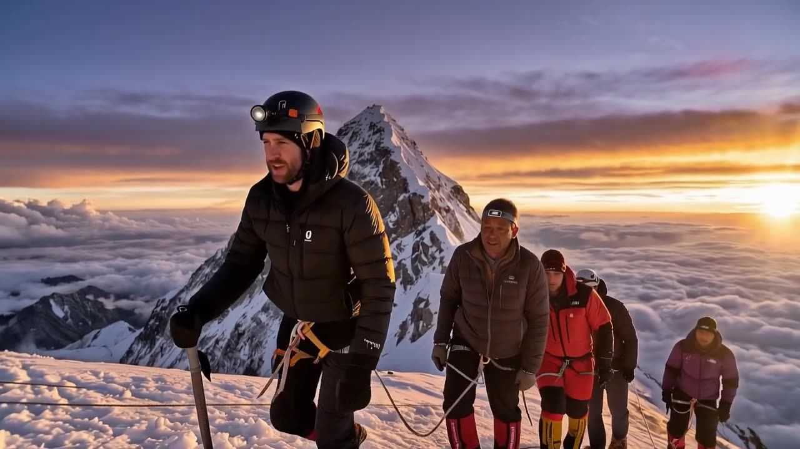
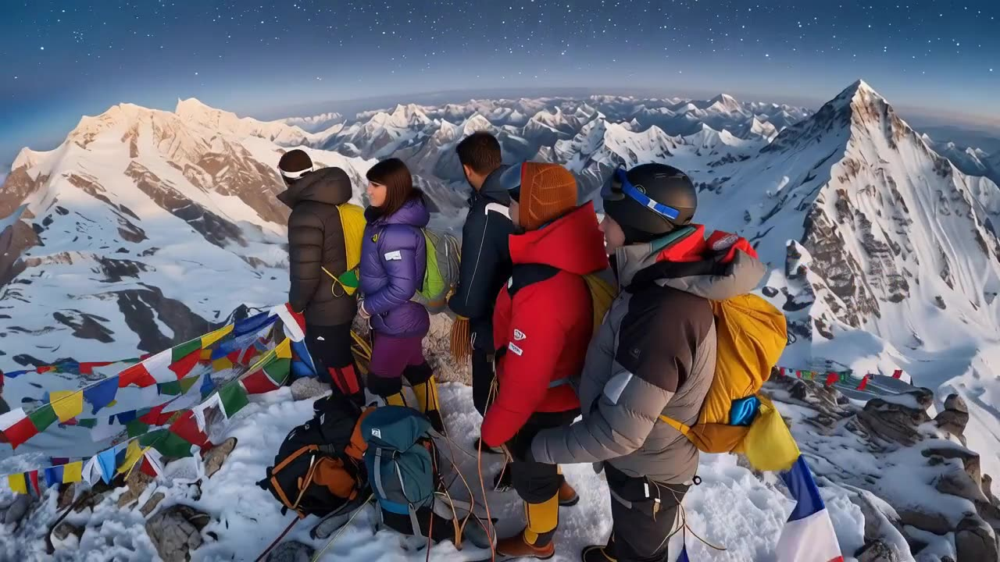
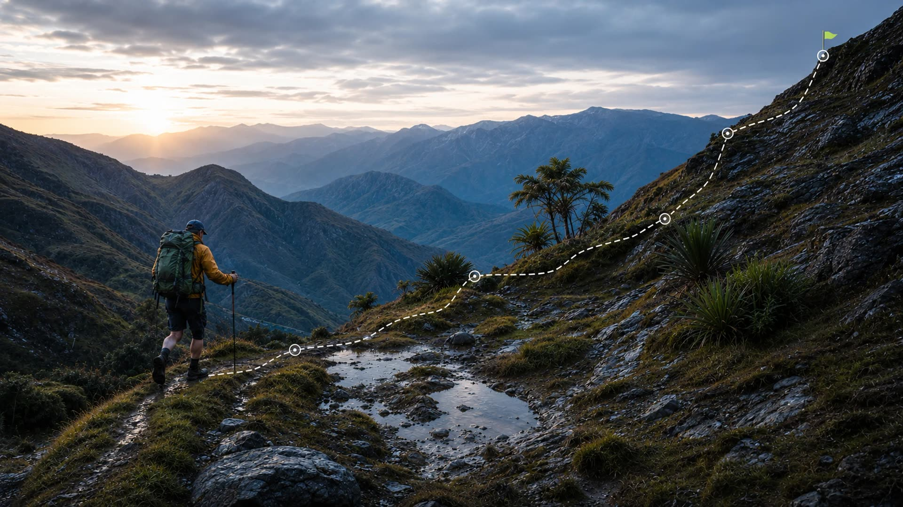
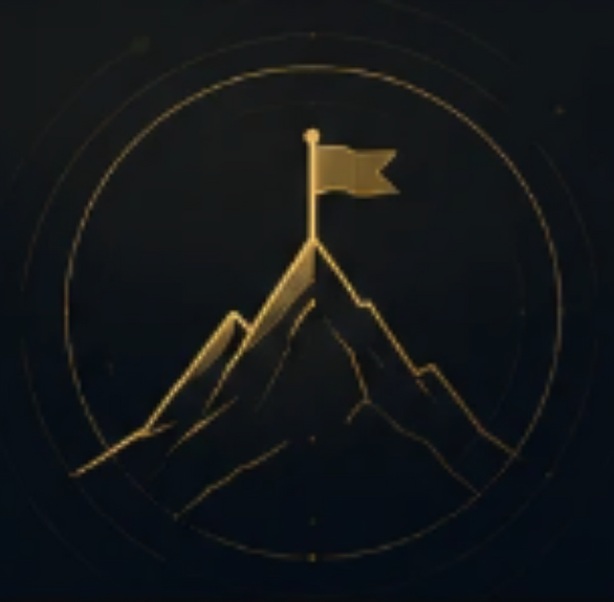

Explore Metanoia.
One platform. Every stage of the climb.
The degree got you to the door. What you do next determines whether it opens.
Every year, hundreds of thousands of graduates enter the market with the same degree, the same GPA range, and the same uncertainty. A rare few know exactly what to do next. Metanoia exists to make you one of them.
Find Your Starting Point →For four years, the measure of progress was clear: attend lectures, pass exams, complete the thesis. Then graduation arrives — and the metric disappears. The same system that guided you for over a decade goes silent, and you're left with a certificate, a LinkedIn profile, and a question no one prepared you to answer: what now?
The first job is not just a job.
Metanoia Labs
It is the foundation every subsequent opportunity is built on.
The professionals who entered the market confidently didn't have a better degree. They had a better system. They understood that the job market doesn't reward years spent — it rewards evidence produced. And they knew how to produce it.
Most CVs are eliminated by software before anyone reads them.
Everything Metanoia builds with you is designed to put your application in the last bar.
Most graduates learn these things through trial, error, and months of rejection.
Metanoia compresses that learning into a system —
so you enter the market with the clarity that others only find after they've already fallen behind.





Competing among the ordinary.
Ready to stand among the top 1% of candidates.
You cannot change the CV you built during university. But you can control how powerfully you present what you have — and how deliberately you build what comes next. A clear direction. The right tools. Relentless preparation. Your offer is closer than you think.
Every year, thousands of fresh graduates submit applications to the same companies, wait weeks for a response, and receive a rejection with no explanation. What they don’t realize is that their application never reached a human reviewer — it was filtered before anyone read it, by an algorithm, a formatting rule, or a qualification checklist no one told them about.
The recruitment process at any serious company is not a single step. It is a structured sequence of eight distinct evaluation gates — each designed to filter for a different quality. Understanding what happens at each gate is not an optional advantage. It is the minimum requirement for competing seriously.
Very few candidates are prepared for all of them.
The recruitment process is sequential and cumulative. Passing Gate 5 does not compensate for underperforming at Gate 3. Each gate requires independent preparation — and each demands a different kind of readiness.
A polished CV will not save you in an online assessment. A high cognitive score will not carry you through an HR interview.
The candidates who consistently reach Gate 8 are not more talented. They are more prepared — across all eight dimensions.
Every stage of this gauntlet is learnable. Every gate is beatable — not through shortcuts, not through guesswork, but through preparation that is specific, sequential, and deliberate.
The question is not whether you are capable of passing these eight gates. The question is whether you have the system to prepare for all of them: in the right order, with the right tools, and with enough time remaining.
Metanoia was built to answer that question.
Most graduates send the same CV to the same job boards and wait for a response that rarely comes.
A very few do not.
They are not more talented. They do not have better degrees. They simply know exactly what they’re doing — and why it works. Metanoia gives every graduate the same system.
The Goal
Not by luck. Not by connections alone. By preparation that made you impossible to overlook.
Five tools built specifically for fresh graduates navigating their first entry into the professional world. Available exclusively to Metanoia Premium members.
This is not a course library. It is a working system — here is the exact loop you will run from the day you join.
The free 15-minute Career Map defines your target role, industry, and realistic company tier.
Rebuild your CV against live ATS scoring until it clears the screen that filters most graduates out.
AI mock interviews that remember your last session and drill your weakest answers first.
One highest-leverage action per day — applications, follow-ups, and practice, sequenced to an offer.
How your CV performs against automated screening — before a recruiter ever sees it.
Rewrite two experience bullets as quantified outcomes — your score updates as you type.
Illustrative preview of the Graduate dashboard. Your own data comes from your CV and your free Career Map.

“Direction is the foundation. Preparation is the advantage. The offer is the proof.”Metanoia Labs
Metanoia gives you the direction, documents, practice, and plan to enter the market as the candidate companies actually want to hire. Start with your free Career Map — it takes 15 minutes.
Free diagnostic included · No credit card to start
Your Career Map, your readiness score, and the full Gauntlet cost nothing and always will. The full edition opens the five pillars and The Compass.
Beta introductory price — USD 0 · standard pricing at commercial launch
See what's included
We’re in early access. Here’s exactly what’s built today and what isn’t.